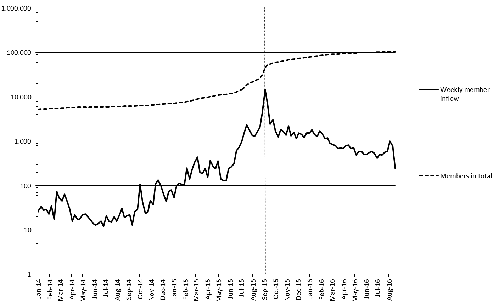
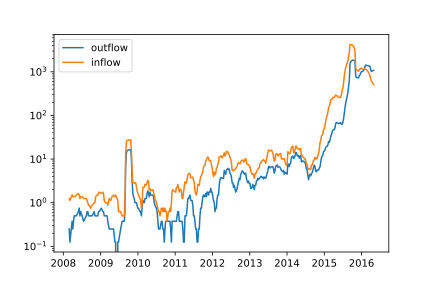
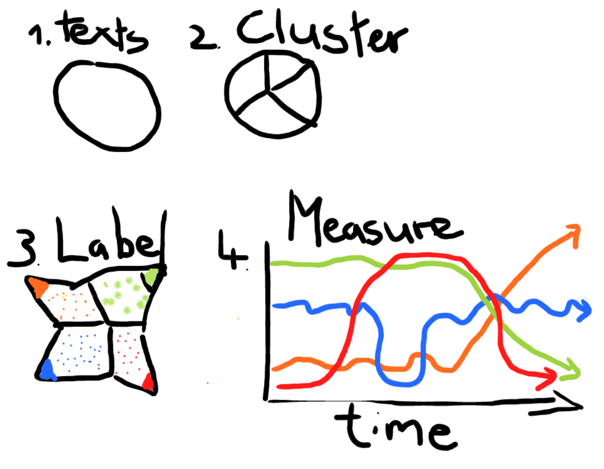
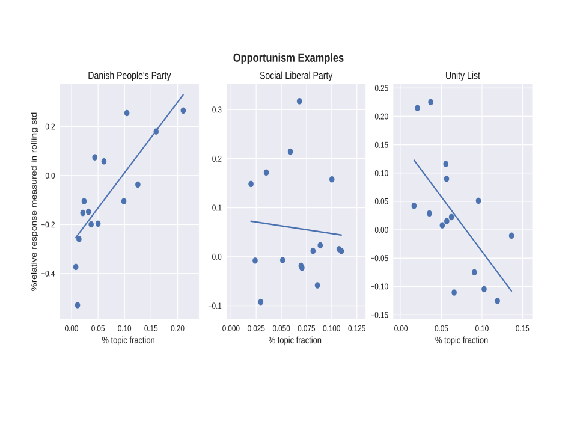
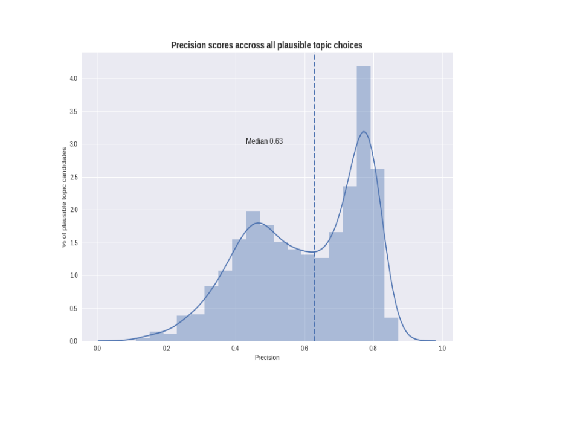
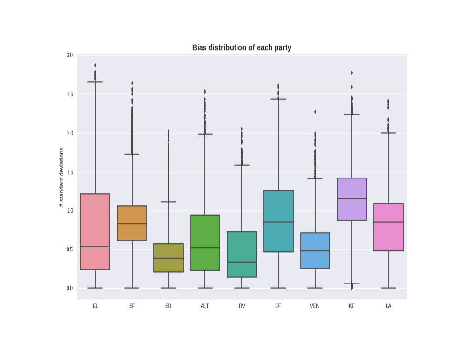
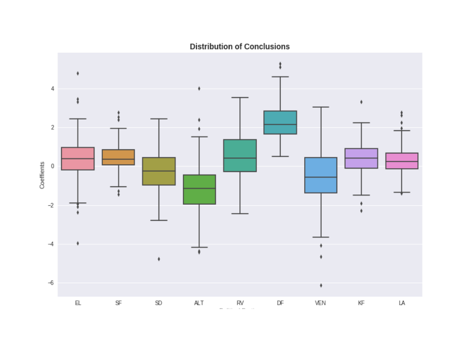
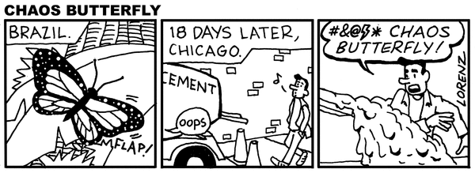

class: center, middle # It is Mixed: ## How to handle ambiguity in digtal (text) analysis Hjalmar Bang Carlsen <br> PhD at the Department of Sociology and Center for Social Data Science(SODAS), <br>University of Copenhagen <br> hc@soc.ku.dk ??? --- background-image: url('refugees_on_the_highway.jpg') --- class: center, middle ### The Growth of the Refugee Solidarity Movement  ??? introduce the movement, and the two datasets the data on the groups and the data on political parties and politicians. In the group dataset we have the coordination effort of the movement. In the political dataset we have both the issue dynamics and the activitist modes of engagement outside the group setting. and its development. --- class: center, middle ### Two different activist styles "The immigration office should be called the office for second-rate citizens" "The journalist does say that the Friendly People fight FOR something - not AGAINST something. In fact, it should NOT read 'fight' - because we don't fight❤️ This is precisely what should characterize the values of the Friendly People. Fighting creates resistance! And resistance is not appropriate if you want change🍃" ??? There two very different ways of engaging with the refugee issue. Both the in classical sense that humanitarian engagement both has a logic of help and care AND a grammar of justification. IN the first where the suffering other most brought out of sufferaging, or where the vunerable other most be given social and psyical security. In this grammar of action the most vital part is our capacity to be moved by the sufferage other, and our ability to act. The characher set here is made op of the helper and the helped. In justification we have someone how deserves help, typically due to the fact the his/her suffuraging was caused by someone else who is the accused and then one has the persecuter. Here the challenge is to justifity that the refugee should recieve help and that a certain collective is obliged to do so, either becuase of thier interactional obligation or thier own action where somehow the cause of the refugees current situations. These modes of engagement has worked side by side i past waves of activism. But in the present wave we see that these different modes have become different group identities where some group simply do not see political and critical articulation as something which further the activist cause. --- class: center, middle ## Why friendliness and not critique? ??? - give an introduction to the danish setting, - immergration/integration has been the major political issue for the last many years, the right party The Danish People Party have gone from 12 procent of the vote in last many election from 2001-2011, to in 2015 to be the second largest party with 21 procent of the votes. - The danish people party biggest ideological victory is that they have nearly made immigration a consensus issue in danish politics. All major parties to a larger or smaller extent has started to immitate the rhetorics and the politics of the danish people party. - At the same time you large part of the danish population who see themselves and denmark as place of great openness, great respect for human rights and international conventions and international responsibility. Historically the nation which gave most to international aid per capita - So the puzzle is this in a situation of major mobilization, where the political parties are becoming more hostil to immigration and muslim parts of the population giving no major established political platform to articulate their critique, in highly politized and immigrant hostil environment, a movement of like minded mobilizing on facebook, why is it the frienly style that takes off and becomes the defining feature of this wave of activisme? --- class: center, middle  ??? - what we get from Facebook is this very nice time stamped and relational event data, where we can seen **when** people are active, **where**(in which group or page) and **who** they interact with. --- class: center, middle <img src="stability_of_activist_engagement.png " alt="" height="600" width="700"> --- class: center, middle <img src="Survival function of Activist by Gender.svg" alt="" height="600" width="700"> --- class: center, middle ## Enriching poor activity data with rich textual data ??? We might have some ok idea of the where but we only know very little about **what** their activity is about and **how** they do this activity. For the puzzle around which form of engagement with the refugee issue and which group/scene style dominate the within the social movement we need to know these things, and having them connected to the activity data would give us. **The inherent ambigiouty of pure activity data** In itself activity data shys away from the variation in forms of activity. And in any given explanation of social action we construct a narrative that implies meaningfull action in certian types of situation. Pure Activity leaves this plainly op to the analysist to impute meaning to the pattern of activity. But we here have little insurens that we not collaps many different types of activity, many different narratives of action into one. Creating what seems as stright foreward story, but only because we do look closer into what the activity is really about. Hence unaccounted for variation creates highly ambigious explanations. This ambigiouty and meaninglessness is now a common experience in various reccommendation system, facebooks included, that work on a more or less flat concept of activity. Here totally unrelated things are brought together by the simply fact that you or others have acted on them... --- class: center, middle ### How to categorise 750.000 different communication acts? ??? from fieldwork in the groups we know that a variaty of activity is going on. Material help, juridical help, organization of social event. Beside those action which are in directe relation to helping and supporting the refugee cause there is also alot of identity building within the group where members express themselves around what it means to be a friendly people/friendly dwellers. We also have various points of conflict within the movement groups espacially around the issue of tone and critique. Where many groups but not all do not what political talk, the sharing of pictures or stories of suffurage. So there is alot of interesting and very varying things going on in the textual material. we also have their activity on the political pages in denmark, so all the danish politicians and political parties. --- class: center, middle ### Map, count, model, sample and code or simply read and learn? ??? There has been a great boom in methods through which we can search for patterns in large amounst of text, in part because text in part because text data is big ressource and big tec industries, both in regards to optimizing "search", but also learning about consumer preferences, predicting behaviour and automating various text based services: barginning, firm communication with costumers aso. This has greated a wide range of tools which social scientist have used to to do research with text. We also have had some methods which has been used for quiet a while count work occurrance, or making networks out of co-occuring words. There is of course also the tradition of sampling and coding, the most common strategi in text analysis. And then there is a strategy that people nearly forget is a strategi, namely reading in different modes - philology or library research. One distinction which has been made agian and agian in the litteratur is the between deductive and inductive strategies, One where one has certian categories which one want to label data with, dictionary methods where one maps words to concepts or coding where one reads and categorises text unites. In a sense this clearly does not statify many research scenerios where one needs a method to find out what is at stack in ones data, before ones applies a dictionary or categorization schema. The great challenge is engaging productivelty with the variation and intial ambigiouty found in the "textual data" in order to arrive at more adequate discription the members own effort at ordering thier coordination efforts. The danger is getting lost and arriving at more vague and ambigious explanation then before. --- class: center, middle ### Computationally Grounded Theory ### Pattern discovery | Pattern refinement | Pattern confirmation *Laura Nelson 2017* ??? For these reasons and more an approach to categorising textual data which has recently been called computationally grounded theory has had quiet som succes in the major social science journals.The article by Laura Nelson called "Computational Grounded Theory" most plainly and naively articulates the ambitions of this mode of inquiry, which to derive meaning through co-occuring words, work both formally and interpretatively in the effort to measure meaning. She divides op into pattern discovery, pattern refinement and pattern confirmation. **Pattern discovery** The role of computer assisted text analysis in pattern discovery is to reduce the messy complicated text into a simpler more interpretable list or network of words(Nelson 2017: 9). This allows for relevant categories to emerge from the data that the researcher due to their own preconceptions or the complexity of the text had not considered. Thereby inducing the researchers biases into the material. The simpler representation are then interpreted and categorized in a fashion similar to normal content analysis, but unlike human-coded text this process is "fully and immediately reproducible"[@nelson2017computational: 13]. In sum computer-assisted pattern discovery that uses actual frequencies of word (co-)occurrence to locate ideas or concepts in the data constitutes a more "reproducible and scientifically valid grounded theory"[@nelson2017computational: 13]. **pattern refinement** In the pattern refinement step the researcher performances, what Nelson calls, a computationally guided deep reading. This step is suppose to 1) confirm the plausibility, 2) add interpretation and 3) possibly modify the patterns in order to fit better a holistic reading. There are two problems the computational guidance is suppose to solve. One is the natural limits to scale deep reading and secondly our biased reading. Both these concerns are handled by the algorithms that identify texts "that are representative of a particular theme" and that can "calculate the relative prevalence of that category"(Nelson 2017:24). A careful application of these algorithms enable the research to ""read" and interpret any amount of text without the burden of reading the whole text". Furthermore both the researcher and the research community can "trust that then a quote is chosen as an example of something, it is not an outlier but is indeed representative of some theme in the text"(Nelson 2017:24). **pattern confirmation** Seeks to validate the measure with other means. Either a different varibale indicating the same concept, construct validity, or an event which should activate the category, predictive validity aso. --- class: center, middle  ??? Here is a cartoon version of the process. 1) you have a brunch of text, 2) you let some kind of computational process find pattern in the material, weather it is simple word counts, networks of co-occuring words or topic models 3) these pattern are in turn interpreted by the analysist as either being a *usefull* and meaningfull difference in the data or not. If not the analysist changes what is called the preprocessing of the textual material, tries to remove some words, defining the window differently(the length of a word spell wherein a word can be said to co-occure with another), in network analysis we might say something like words have to co-occure 4 times before their relations count or I need to scale the network differently, use another spacialization algorithm aso. This untill they make meaningfull results which the analysist can understand and lable But by what warrant are making all these decision and interpretations? How do they relate to the experience of the actors whos symbolic interaction we categorising? The main validity creteria one hears is that the model or network visualization has to be interpretable or usefull as it is said again and again. But the data is not there to make sense to us, we are here to make sense of the data. One might then say if we assume that symbolic interaction has some kind of order and meaning to it then we most be able to find it with these methods. But here we most remember that we are working on a rather unstable indicator or the actual phenomenon and not the phenomenon itself. We are taking statements located, delinated and related in specific ways and cutting them into discrete words which then use to make inference about the originale statements. This points towards the future problem of operating on words alone, in that they do not in any obvious way tame interpretation, they are multiple, ambigious in their natur that is why we can use the same word in many different statements. Anyone who has looked at a network of words has had the feeling that this could mean anything and nothing. Only when you have clear ideas of what is in network does can it speak to you clearly. It is in this sense highly dependent upon the researchers own frame of reference. But I'm going to quick here becuase computationally grounded approach also reads whole documents engages with deep reading. hence the manipulations and interpretations of words can be justified with reference to the deep reading of documents. There is a very practical reason why does not work, and it is that with large possibly correct manipulations one would quickly have to read impratical many document. The other is that the current sampling procedures for interpreting what a cluster is about relies on a very naive sampling - in Topic Modeling one reads the most predictive documents of given cluster, and in typically network approach one makes a similiar move reading the documents or web pages most connected within the cluster. These strategies area clearly not simple random sampling of any sort but rather what one might call paradigmatic sampling, where one gets the exemplar that tells us something about the rest of the cluster is about. But with paradigmatic sampling or case selection we most trust that the general category of which a document is an exemplar is an interpretatively valid category or else the procedure makes no sense. But the category is itself derived from words relations so it can't be used to justify how these are made. Of course one might say that I'm confusing the context of discovery with the context of justification. In the last step the pattern confirmation step we validate the cateogries that we have found with classical validation measures. But the current validation procedures in topic modeling for example does not ensure us against measurement error and provide proff of interpretative validity of the category. There is a simple reason for this and that is that they do not test weather what they think is in a given cluster is actually in the cluster, they to have a manually codede test through which they see how their own interpretation alignes with the model. Futhermore even if we implimented a procedure of where one would validate ones model with a test set as is normal practice in supervised machine learning, we only some of the way. Both because we can't out of the box trust human interpretation, we only do so after carefull interpretative work which invovles a great deal of learning and reflexivity. But also in making a test set we have to make many decisions that can influence our finale results and which have little and no reference to experience. --- class: center, middle ## Questions ### 1. What, Where, Why and Who are we discovering? ### 2. How are we refining and deep reading? ### 3. Securing good measurement or plausibility of intial discovery? --- class: center, middle ### What could possibly go wrong? --- class: center, middle  ??? We have working paper where we try to show the consequence of the lack of validation procedures, and how easily one can end op with topic model which categories seem sensical from the reading most predictive works and most predictive documents. So what I have talk about alot until now is interpretative validity, now I'll go more into the related problem of measurement error and baises. We'll also change empirical setting abit. So now we are not dealing with Refugee solidarity actvist but what topics danish political parties/politicians write about on thier facebook. So what we interested in besides this simulation test of topic model, is how much the refugee issue dominates the issuescape through time and what role 'likes' play for the allocation of attention amoungst politicians. Thier opputurism or responsiveness if you will. It is the latter the simulations ask to. In order to illustrate the consequences of the measurement issues in Topic modeling we simulated alot of topic modeling research project, from the acceptance of cluster representing a certian topic, to labling the topic and in the last instance using that input into a model that answers which parties are oppertunistic and which are not. That is which parties aligne their attention allocation to topic with the amounts of likes they get. So I'll quickly run over the procedure: 1) constructed a dataset based on dictionary lables that is words that are highly indicative of a topic, where each Facebook post only had one label. With some certainty we could then say that this post was mainly about a certian topic. In the end we where left with a dataset of 46209 documents ranging over 15 different topics. 2) we then ran a LDA topic models with a different number of clusters from 15-30 and ran it a 100 time for each setting this resulted in 1600 different topic models and 36000 different topic candidates(that categorisations of the data). 3) This the topic candidate had many of the words and documents associated with a given topic we would lable is as being that topic. after this we where left with 3000 topics that matched our prior conception on what a topic was. With these 3000 topic candidates we can then compare their precision, that is how many of the those documents that the model and we think are about a given topic is about that topic. --- class: center, middle  ??? And that is what we did here. And this is a very worrying result, because the topic candidates that we with current procedures have no have choicing between have very very different precision scores. The median being 63 meaning that 50 procent chance of choicing a topic cluster that has a lower than 63 procent accuracy. One might say that this is not that big of a problem if the lack of accuracy is randomly distributed(an highly unlighly scenario), but lets see. --- class: center, middle <img src="precision_across_topics.svg" alt="" height="700" width="700"> ??? So here we have precision across topics. And it is obvious that the topic model does not threat all Topics equally leading to differential bias. If it did there would be no difference in the box plot above. So the topic model is very bad at measuring elder care, and much better at measuring education. This is of course very problematique in that you will systematically be better as measuring some topic rather then others. --- class: center, middle  This differential baise is also true across different political parties. Finally for each plausible choice of topics we assess a separate precision score for each party. We then transform each precision score to a standardized distance from the precision norm of the plausible topic. The distribution for each party is reported in figure 4. It shows that the bias is distributed very unevenly across party lines suggesting that comparisons across background characteristics can be highly problematic. In the supplementary material we investigate how the number of training examples for each topic and party could be part of the cause. If we had no problem everthing would be at zero where. --- class: center, middle  --- class: center, middle ## computational and interpretative modes of inquiry, a necessary butterfly effect?  --- class: center, middle ### Library Ethnography, narratives and Supervised Machine Learning --- class: center, middle ### Thank you ### hc@soc.ku.dk